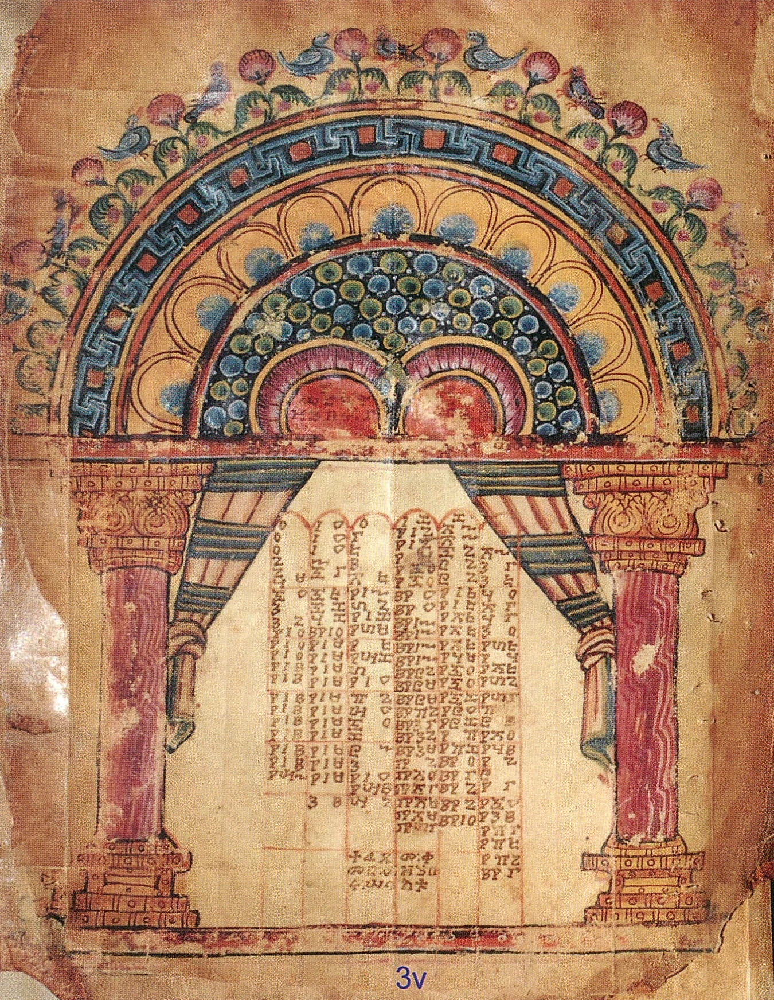
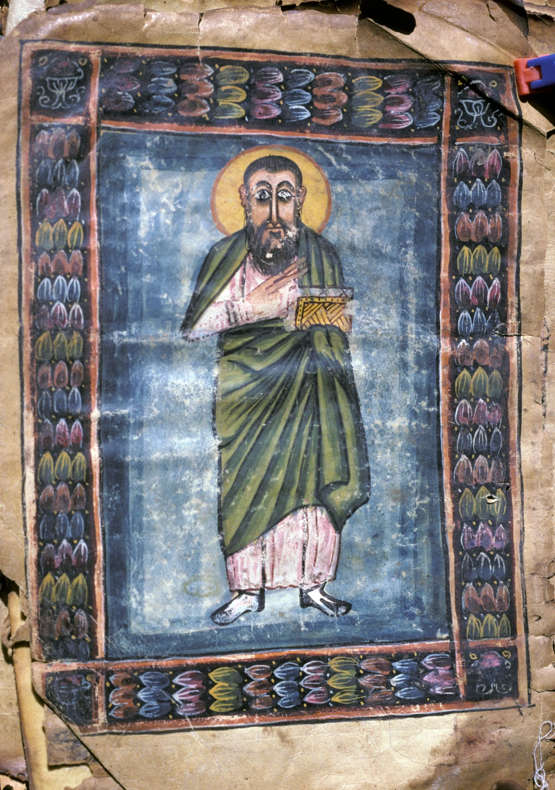

아직 펼치지 않은 카드성경을 위해 만든 글자 · 5가리마 복음서에티오피아 산속 수도원에 전해 온 복음서가 있어요. 학자들은 12세기 책이라 생각했는데, 과학으로 재 보니 깜짝 놀랄 결과가 나왔어요. 언제 것이었을까요?에티오피아 산속 수도원에 아주아주 오래된 그림 책이 있대!
2006년 10월에티오피아 · 아바 가리마 수도원 ‘보물 집’ 앞마당
가리마 복음서
2006년 10월, 에티오피아 고원의 아바 가리마 수도원이에요. 1,400년 넘게 수도원을 떠난 적이 없다는 복음서 두 권이 나무 상자에서 나와 마당의 작업대에 펼쳐졌어요. 그 가운데 한 쪽을 손가락으로 문질러 햇빛 아래 비춰 보세요.
아주아주 오래된 성경책이 상자 밖으로 나와 햇빛을 봐. 같이 비춰 보자!
검수 전 시안이에요(기준서 1판). 장면에는 보존가들이 남긴 기록에 있는 것만 옮겼고, 전설은 전설이라고 밝혔어요. 상상은 ‘눈 감고 상상해 보기’에만 썼어요.
시안 확인용카드 단계 미리 보기
1
보물 집 앞마당의 작업대
2006년 10월, 에티오피아 북쪽 티그라이 고원(해발 약 2,400m)의 아바 가리마 수도원이에요. 영국의 에티오피아 유산 기금이 보낸 책 보존가(낡은 책을 고쳐 오래 남게 하는 사람) 두 사람이 왔어요.
이 책들은 수도원 밖으로 나간 적이 없다고 해요. 그래서 둥근 ‘보물 집’ 앞마당에 작업대를 차렸어요. 낡은 탁자 하나와, 장례 때 쓰는 들것 두 개가 작업대였어요.
“이 책들은 1,400년이 넘도록 수도원을 떠난 적이 없어요. 나라 밖은 말할 것도 없고요.”
레스터 캐펀의 보존 기록(2008) 가운데서(이 안내서가 옮김)
햇볕을 피해 하루에도 두세 번 작업대를 옮겼어요. 당나귀가 가끔, 원숭이는 자주 들렀어요.
나무 상자에서 꺼낸 그림 쪽 몇 장은 제자리가 아니었어요. 다른 권에 있어야 할 쪽도, 거꾸로 꿰매진 쪽도 있었어요. 수도사들과 의논해 두 권의 쪽 차례를 바로잡았어요.
아주 오래된 성경책을 고치려고 마당에 작업대를 차렸어. 원숭이도 구경 왔대!
물어보기아주 오래된 책을 고친다면, 무엇을 가장 조심해야 할까?
2
햇빛 아래 펼친 쪽
둘째 권(가리마 2)에는 그림 쪽이 열일곱 쪽 있어요. 그 가운데 한 쪽에는 4세기 학자 에우세비오스가 서 있어요. 그가 만든 복음서 대조표(네 복음서의 같은 이야기를 찾게 해 주는 표) 바로 앞에 놓인 그림이에요.
평소에는 나무 상자에 넣어 두는 책이에요. 햇빛 아래 펼치듯 손가락으로 문질러 비춰 보세요.
상자에서 꺼내 햇빛 아래 펼치듯, 손가락이나 마우스로 문질러 비춰 보세요.

가리마 2의 그림 쪽. 금빛 둥근 빛을 두른 사람이 책을 들고 서 있어요(에우세비오스로 봐요) · 「가리마 복음서」 가리마 2의 그림 쪽 · 사진: Michael Gervers · 퍼블릭 도메인 · 위키미디어 공용
빛이 닿으면 숨은 표시가 나타나요.
다 고친 두 권은 이 책을 위해 만든 나무 상자로 돌아갔어요. 작업은 모두 수도원 안에서, 언제든 되돌릴 수 있는 방법으로 했어요.
상자 속에 있던 책을 햇빛에 비춰 보자!
물어보기그림 속 사람은 손에 무엇을 들고 있을까?
눈 감고 상상해 보기
높은 고원의 맑은 햇살이 마당에 내려요. 올리브나무 사이로 원숭이들이 오가고, 멀리서 당나귀 방울 소리가 들릴지도 몰라요. 낡은 탁자 위에 1,400여 년 된 양피지가 펼쳐져 있어요. 이 쪽을 처음 칠한 사람은 어떤 빛 아래에서 붓을 들었을까요?
눈을 감아 봐. 따뜻한 햇볕이 내리쬐고, 나무 위에서 원숭이들이 놀고 있어. 아주 오래된 책을 조심조심 한 장씩 넘겨.
나의 자리
오래 ‘별것 아닌 것’으로 여겼던 것이 알고 보니 아주 귀한 것이었던 경험이 있나요?
우리 집에서 제일 오래된 책은 뭘까?
마음에 닿는 한 줄을 고르거나 직접 써 보세요. 한 줄을 남기면 이 자리의 도장이 찍혀요. 이 기기에만 저장돼요.
더 깊이
궁금한 칸만 펼쳐 읽어도 괜찮아요.
알고 보면
게에즈어 에티오피아의 옛 말이에요. 4~7세기 악숨 왕국에서 썼고, 가리마 복음서도 이 말로 썼어요.
세 권의 책 가리마 1과 가리마 2, 그리고 뒷날 만든 셋째 복음서가 있어요. 셋째 책은 가리마 2와 한데 묶여 있다가 보존 처리 때 따로 나뉘었어요. 가리마 1은 열한 쪽의 대조표 그림으로 시작하고, 가리마 2에는 복음서 저자 넷과 에우세비오스를 비롯해 그림 쪽이 열일곱 쪽 있어요.
제자리를 찾은 쪽 가리마 1에 꿰매져 있던 그림 쪽 가운데 세 장은 가리마 2의 것이어서 옮겼어요. 다른 세 장은 반대쪽 가장자리를 꿰매 놓아 뒤집혀 있었어요. 가리마 2에서는 빠져 있던 세 장을 다시 넣고, 한 장을 제자리로 옮겼어요.
고친 방법 찢어진 가장자리는 36g짜리 얇은 일본 종이(타이잔)를 양피지로 만든 풀로 덧대어 메웠어요. 새 삼실을 옛 바느질에 이어 꿰맸어요.
기록마다 다른 점
몇 년 된 책일까 학자들은 오래 12세기보다 오래되지 않은 책으로 여겼어요. 2010년에 알려진 옥스퍼드 대학의 측정값은 330~650년이었어요. 2013년 11월 메르시에가 발표한 값은 가리마 2가 390~570년, 가리마 1이 530~660년이에요.
두 가지 전설 수도원 전승으로는 아바 가리마가 하루 만에 복음서를 쓰고 그렸고, 그가 다 마칠 때까지 하느님이 해가 지지 않게 하셨대요. 494년에 아바 가리마가 콘스탄티노폴리스에서 이 책을 가져왔다는 이야기도 전해요. 둘 다 전해지는 이야기예요.
그림 속 사람 위키백과는 이 그림을 가리마 2의 대조표 앞에 놓인 에우세비오스로 소개해요. 위키미디어 공용의 설명은 책에 십자가가 없고 흰 두루마리도 없으니 복음서 저자 마태가 아니라고 봐요.
작업대를 몇 번 옮겼나 햇볕을 피해 작업대를 옮긴 횟수를 레스터 캐펀은 하루 두 번, 마크 윈스탠리는 하루 세 번이라고 적었어요.
직접 가 보기
확인한 날 · 2026년 11월 18일 · 바뀌기 쉬운 정보라 정기적으로 다시 확인해요
책은 아바 가리마 수도원이 지켜요. 그림 쪽 사진과 고친 이야기는 아래 기록에서 만날 수 있어요.
햇빛 아래 펼친 쪽 금박
그림 쪽의 네 곳을 모두 비춰 찾으면 카드에 금박이 입혀져요.
에우세비오스 그림 쪽을 끝까지 비춰 보기
아이와 함께 채색
아이와 함께 ‘영화처럼 보기’를 끝까지 보면 카드가 채색돼요.
아이와 함께 ‘영화처럼 보기’를 끝까지 보기
근거 보기 (6)
- Lester Capon(2008), Skin Deep 26: 에티오피아 보존 기록 — 2006년 5월 연락과 몇 달 뒤 방문, 보물 집 마당을 작업장으로 씀, 낡은 탁자와 장례용 들것 둘, 하루 두 번 옮김, 당나귀·원숭이, 1,400년 넘게 수도원을 떠난 적 없음, 자주 잠긴 보물 집, 나무 상자, 쪽 옮기기·뒤집힌 쪽, 타이잔 36g 일본 종이와 양피지 풀, 삼실, 런던의 에티오피아 유산 보존 자선 단체
- Mark Winstanley, Skin Deep 23: 작업 일기 — 2006년 10월 초, 바깥 작업장, 하루 세 번 옮김, 올리브나무, 8,000피트 티그라이 고원, 둥근 보물 집, 수도사들이 쪽 차례 바꾸기에 동의, 하루 만에 썼다는 전설
- Wikipedia: Garima Gospels — 해가 지지 않게 했다는 전승, 2013년 11월 메르시에 발표(가리마 2 390~570, 가리마 1 530~660), 가리마 2의 에우세비오스 그림과 그림 쪽 17쪽, 가리마 1의 대조표 11쪽, 세 권과 셋째 책을 나눈 일, 게에즈어(길잡이로만)
- Medievalists.net(2010): Garima Gospels found to be oldest surviving Christian illustrated manuscripts — 옥스퍼드 측정 330~650, 12세기보다 오래되지 않다고 여겼던 일, 2006년 영국의 에티오피아 유산 기금, 수도원 안에서 되돌릴 수 있게 한 작업, 494년 콘스탄티노폴리스 전설
- 위키미디어 공용: Eusebius Ethiopian icon — 에우세비오스 그림이라는 설명과 그 까닭(십자가·두루마리 없음), 사진 정보
- 위키미디어 공용: Garima-Gospels-1 — 대조표 쪽 사진 정보
그림·사진·소리 출처
‘처음 만나는 기독교 문화’의 깊은 카드예요. 카드 단계와 남긴 글은 이 기기에만 저장돼요.